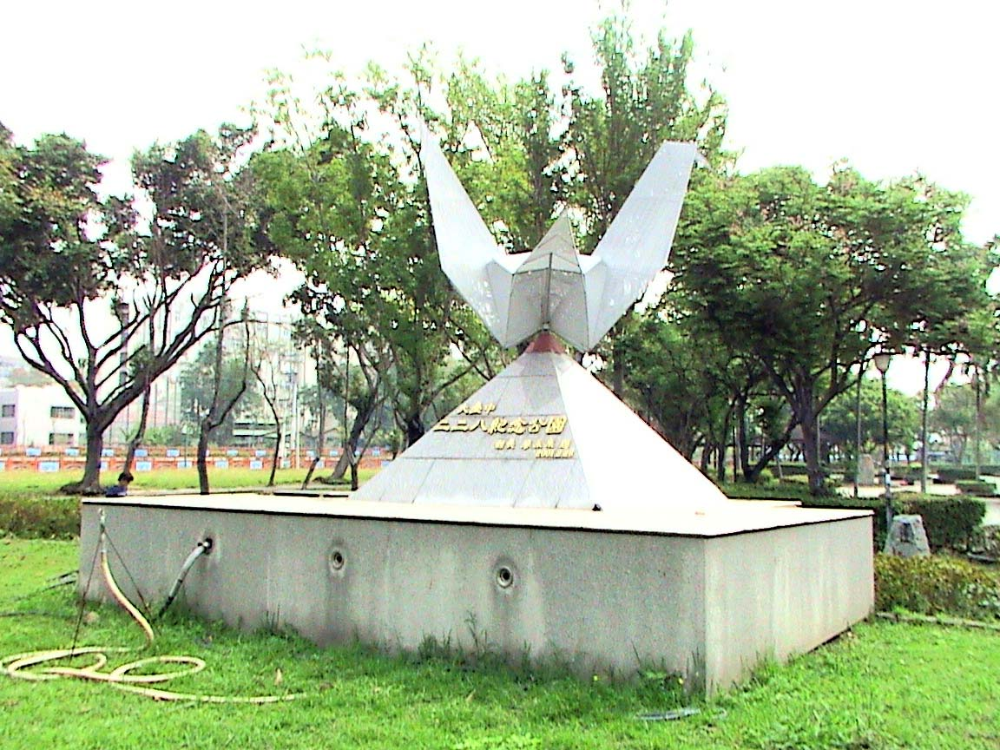
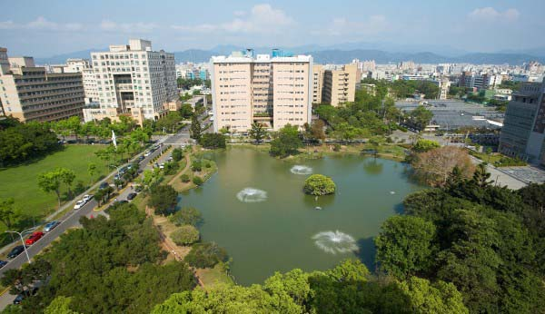

附近景點
台中市大里二二八紀念碑
以「慈悲、博愛及和平」為主軸的二二八廣場位於大里區國光公園內，此處矗立 一座由鋼製成的蓮花花瓣，象徵出淤泥而不染、純潔無暇之意。，高22.8公尺；碑底 則有楊逵孫女楊翠題字的二二八紀念碑文以及受難者名錄。紀念碑花瓣間隙還懸掛著 五十六隻不銹鋼製的「紙鶴群」，象徵和平、和諧的意義。
 圖片來源:自行拍攝
圖片來源:自行拍攝  圖片來源:自行拍攝
圖片來源:自行拍攝  圖片來源:自行拍攝
圖片來源:自行拍攝  圖片來源:自行拍攝
（資料來源：台北228紀念館）
中興大學
民國八年，日本人在台北創建「農林專門學校」，就是中興大學的前身。
民國十七年，改為台北帝國大學附屬農林專門部。
民國三十二年，獨立設校並遷到台中。
民國五十年，位於台中的台灣省立農學院增設理工學院和台北創立的法商，合併為「 台灣省立中興大學」。
中興大學農學院幾十年來為台灣農業貢獻許多，培育不少專業人員，但時代在變 化，為因應社會結構與經濟環境的變遷，農學院更名為「農業暨科技研究」，轉型進 行尖端科技研究，結合農、生命科學與獸醫學院的教師，以成為二十一世紀新興生物 農業科技發展的研究重鎮。
（資料來源：《台中風華－60個獨享中的文化景點》）
圖片來源:自行拍攝